Module 5 - Process Rainfall Data
Warning
Realtime rainfall products such as ERA5, Copernicus, or NEXRAD datasets may contain significant uncertainty and should not automatically be considered calibrated rainfall data. These datasets are useful for screening studies, training exercises, and preliminary hydrologic evaluation, but project-level or regulatory applications may require gage adjustment, additional rainfall verification, calibration, uncertainty analysis, and locally accepted hydrologic methods. Hydrologic requirements and accepted workflows can vary by project location, state, or flood control district.
Step 1: Uniform rain on grid
Real Storm Molina Canyon 9.09 inches in 5 days. July 27, 2006, to July 31 2006.
Data Source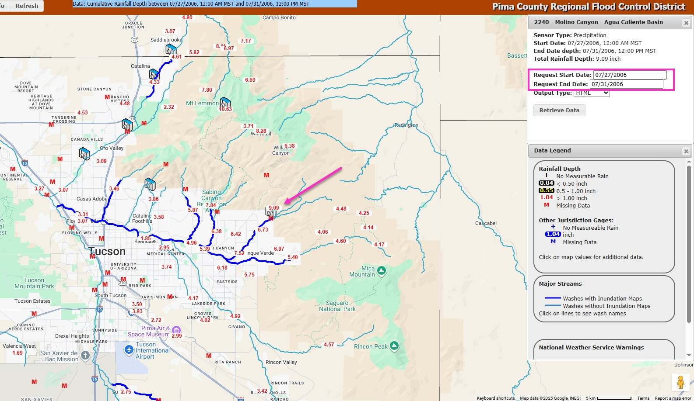
Open the Molina Canyon Rain Table.txt file and copy the rain table.
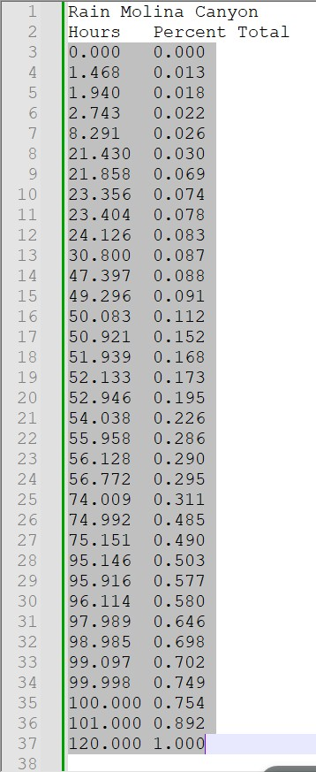
Find the rain editor in QGIS and ensure 9.09 inches are used in the uniform rainfall total.
Add a new Time Series table and name it Molina 5 Day 2.
If necessary, reselect the Molina 5 Day 2 pattern, as the plot may not update automatically.
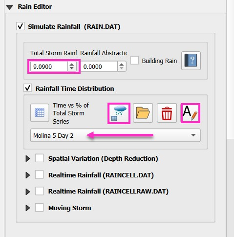
Select the first cell and Paste the Rainfall data into the table editor.
If necessary, click auto range.
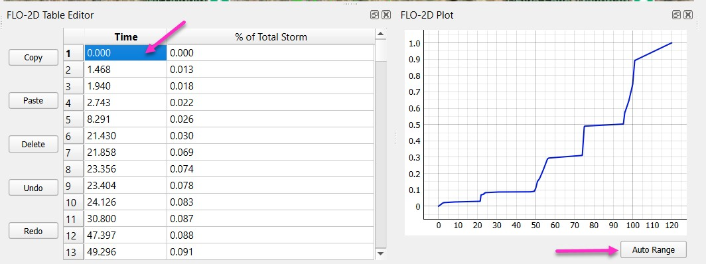
Step 2: Depth point reduction
Find the Gage data in the Rain Group.
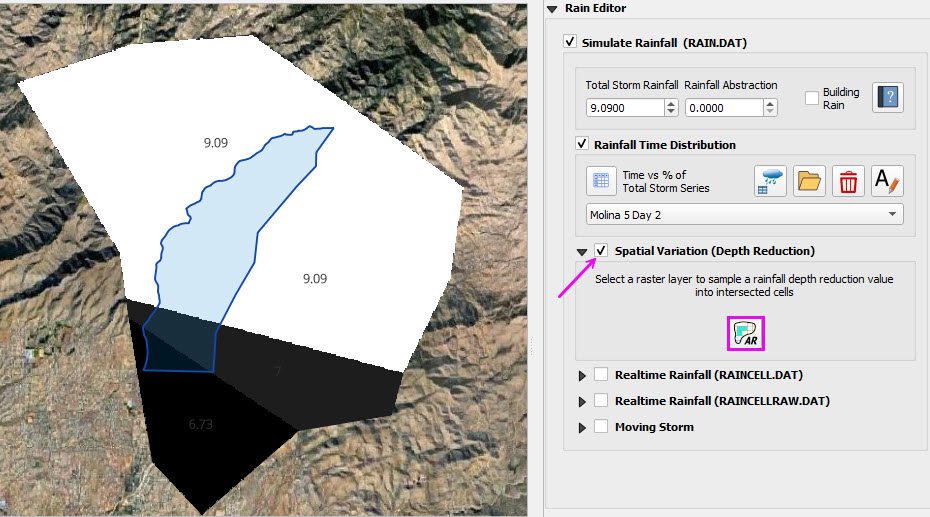
Check the Spatial Variation and click the AR button.
Fill the form and click OK.
If the Raster is missing Check the Rain Group ON.
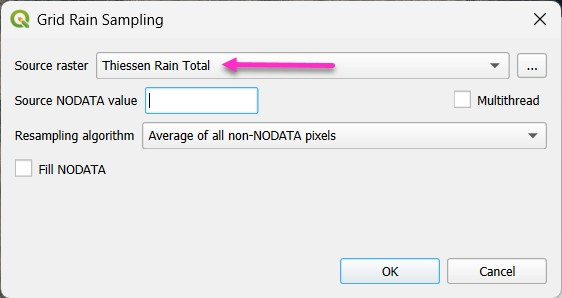
Step 3: Realtime Rainfall (ERA Copernicus)
Note
This step replaces the Uniform rainfall data with realtime data for the same storm. Future versions of this module will include processing NEXRAD Data.
Check the Realtime Rainfall box and click the Add Raster button.
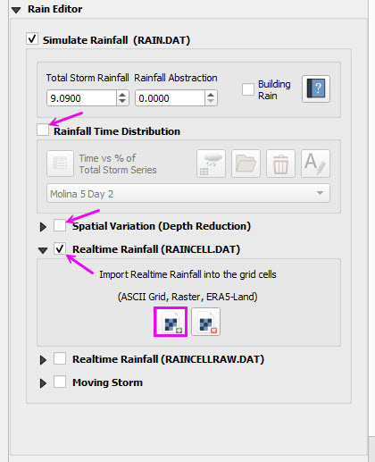
Load the July storm NetCDF file that contains the ERA Rainfall data from the Copernicus Reflectivity.
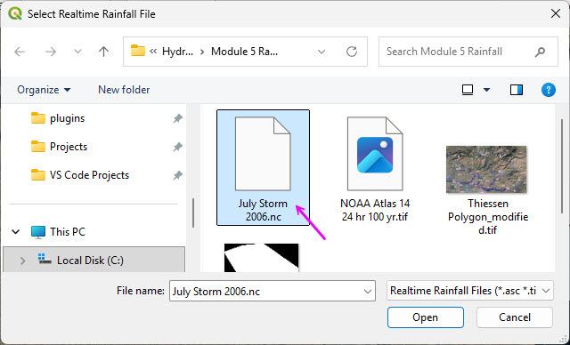
The interpolator will process the realtime rainfall.
Click the FLO-2D Info button on the FLO-2D tool bar.
Zoom into the rainfall area that has 9 inches of rainfall.
Click a grid element to see a sample of the Copernicus data.
This is something like NEXRAD reflectivity but for the whole world.
It can be easily downloaded and gage calibrated to a storm event with gages.
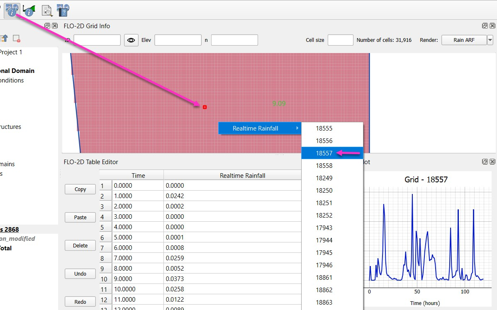
Step 4: Review the Copernicus Downloader
Review these tasks instead of performing them.
An account is required to download this Open-Source data.
Find the precipitation group.
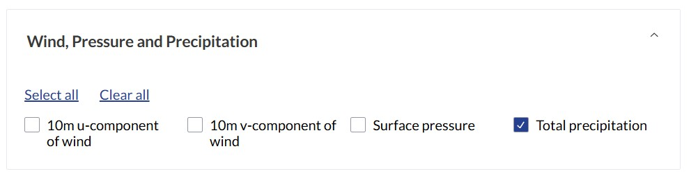
Select the storm year
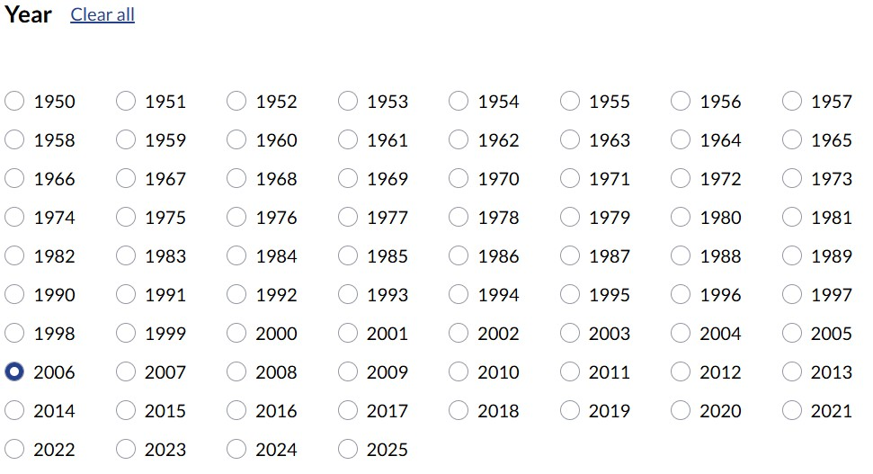
Select the month and days of the storm
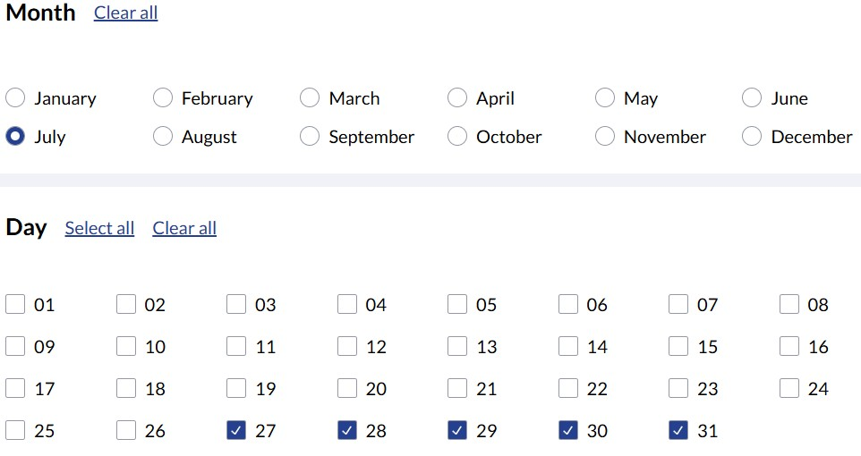
Select all times
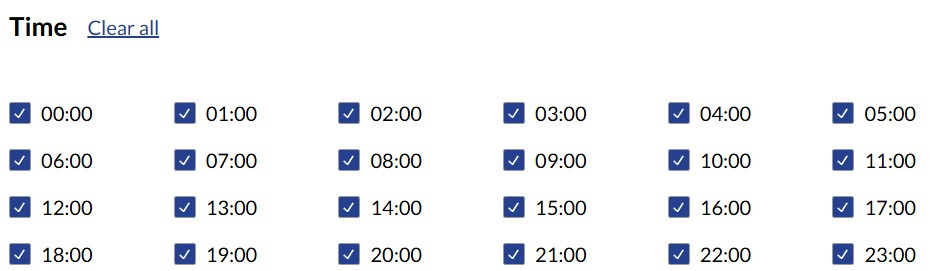
Set up the subregion
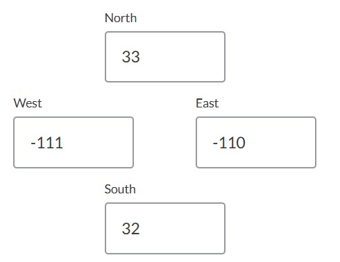
Set the data and download format.
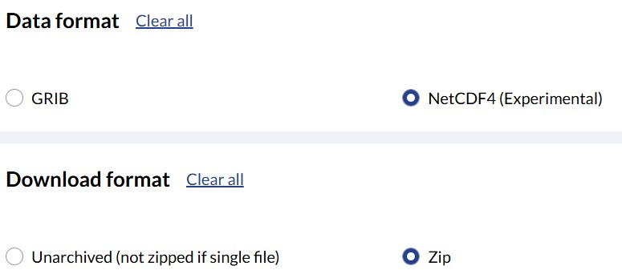
Log-in to a free account to accept the terms and process the request.
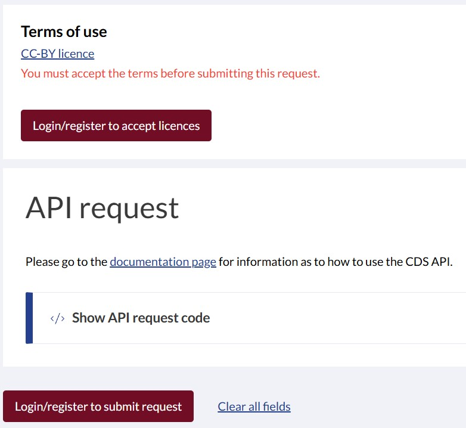